Arca · сканер монет · этап 1Выбери стиль
Шесть направлений, у каждого главный экран и карточка монеты. A–C — первая партия, D–F — по трендам Dribbble и Behance 2026. От выбранного нарисуем остальные экраны, онбординг переносим как есть. Макеты сгенерированы Codex 18.10.2026.
Музей
Тёмный зал, монета на подиуме под софитом, золото только в акцентах. Ближе всего к нашей дизайн-системе.
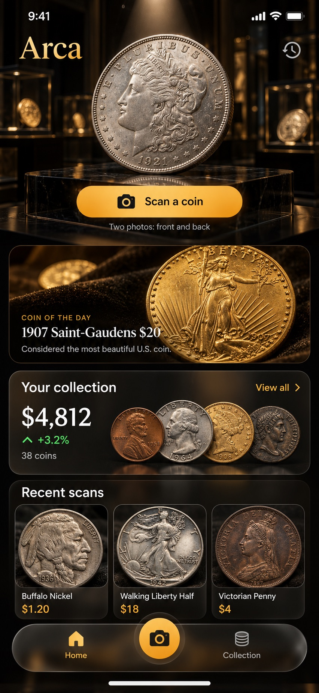
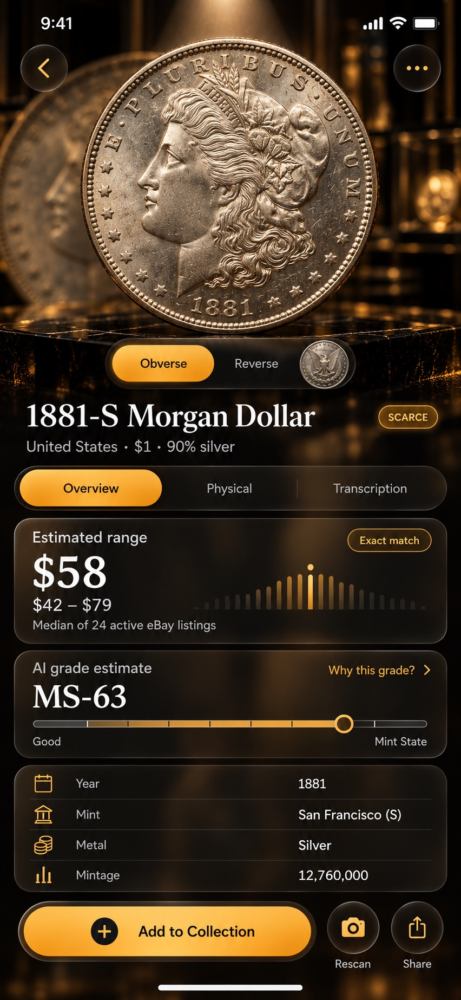
Стекло Apple
Светлый мрамор, матовые стеклянные карточки, дневной свет. Сильнее всех отличается от тёмных конкурентов.
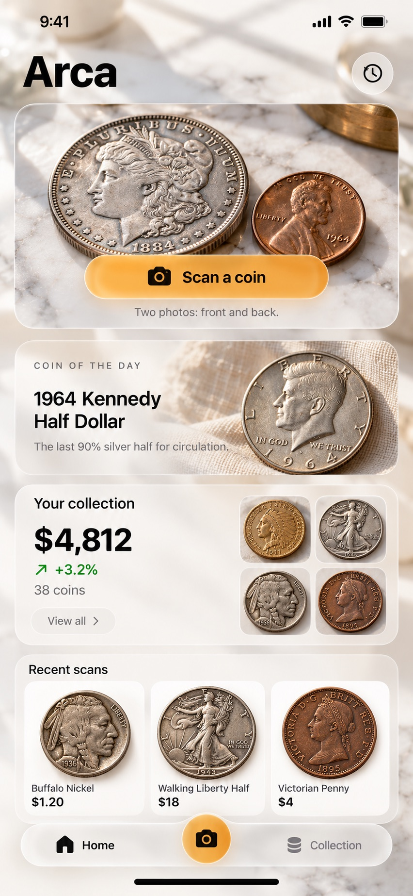
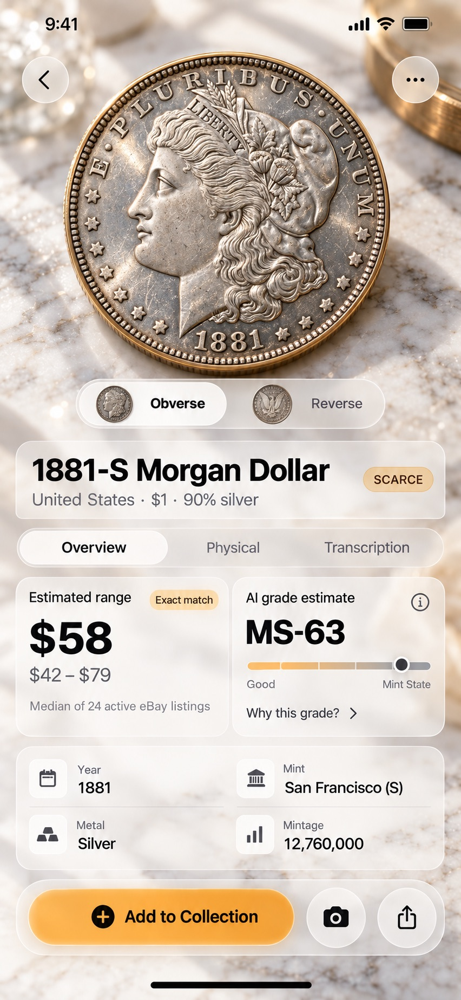
Альбом
Бархатный лоток, дерево, латунь, шрифт с засечками. Больше всего фотографий, экран плотный.
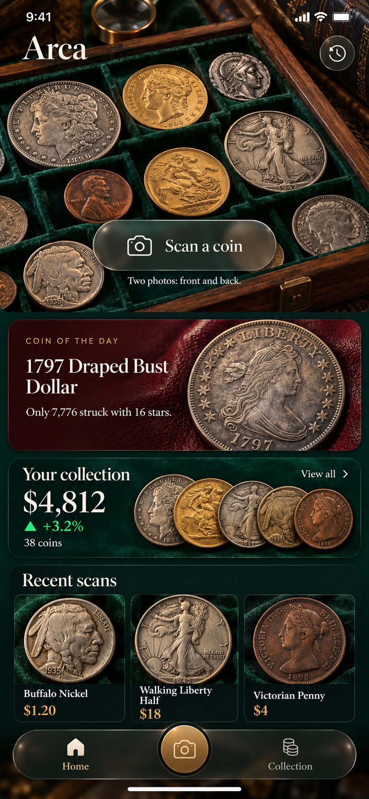
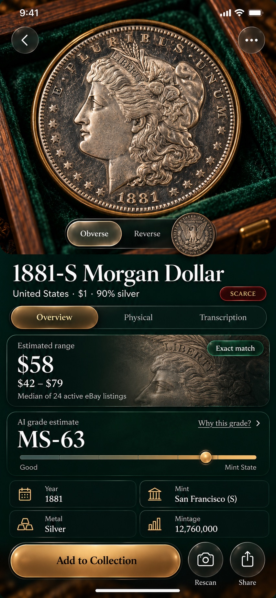
Тактильный брутализм Новое
Тренд 2026: бумажный фон, толстые чёрные обводки, жёсткие тени, мандарин и лайм. Монеты как наклейки на цветных кругах. Самый смелый и запоминающийся.
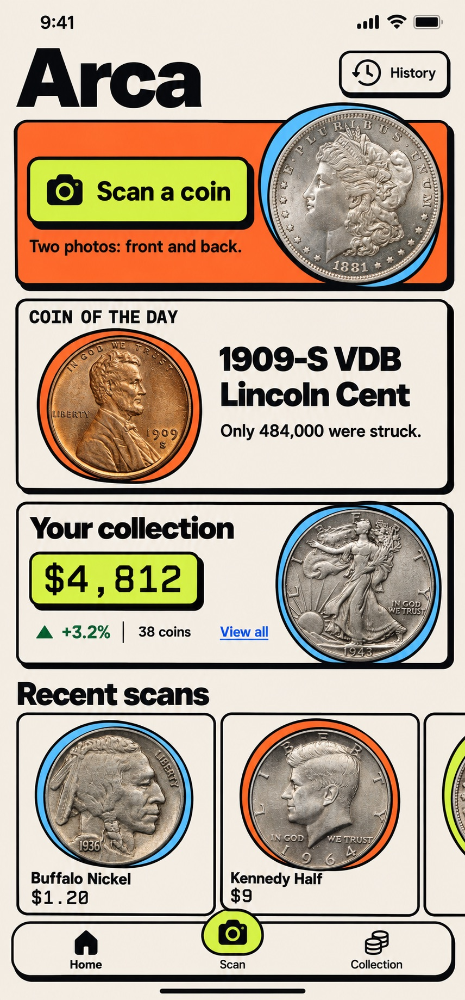
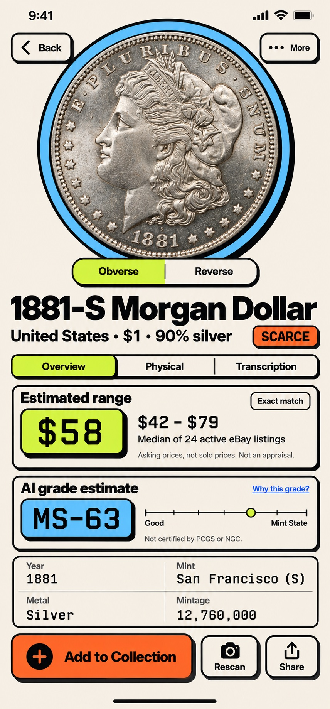
Тёмный бенто Новое
Тренд 2026: сетка плиток разного размера, графит и один кислотный лайм, монета как образец под шкалой. Строго, технологично, без золота.
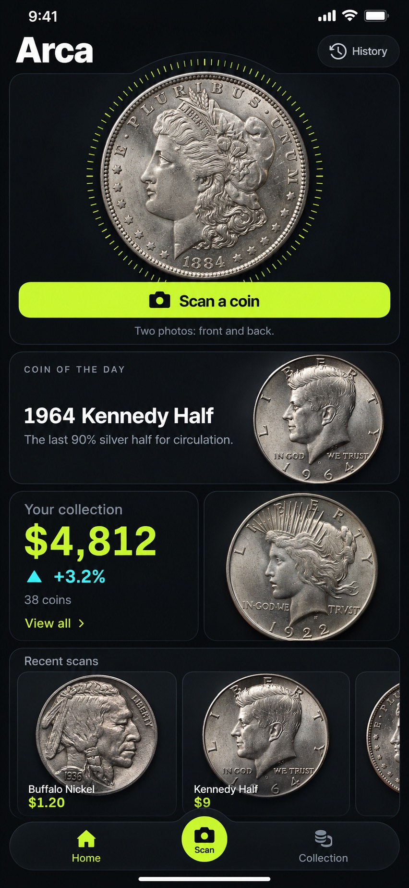

Clay Pop 3D Новое
Тренд 2026: пастельная сирень, пухлые объёмные карточки, розовые и жёлтые кнопки. Монеты при этом настоящий металл. Самый дружелюбный.
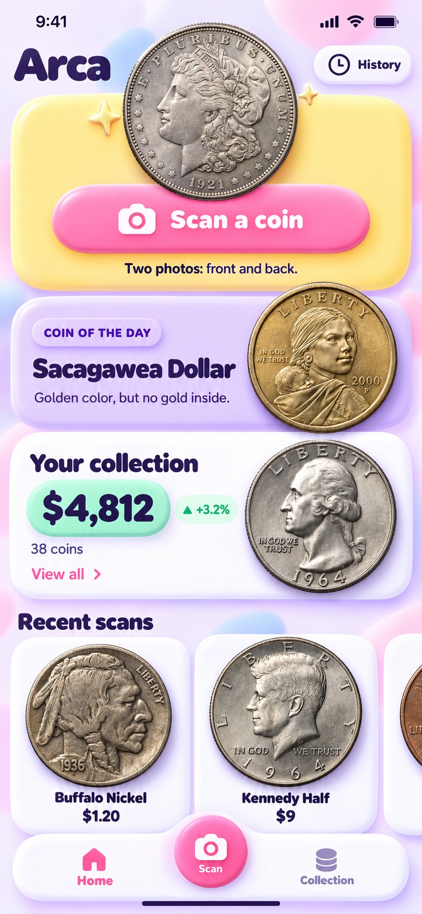
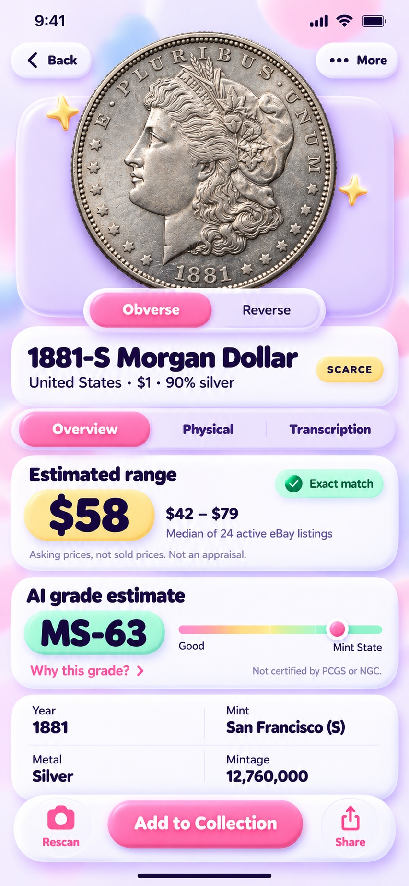